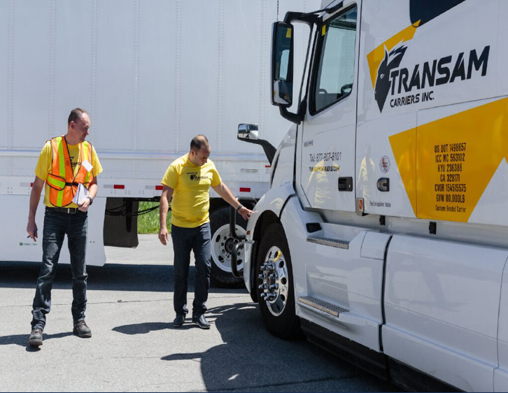
检查车辆健康状态
功能要求：
- 实时数据采集：通过车载传感器和智能设备实时采集车辆各系统状态数据。
- 多维数据分析：通过算法处理和机器学习技术分析动力、制动、转向等系统数据。
- 异常检测与报警：一旦发现异常情况，立即触发报警并通知司机或管理系统。
- 自动化健康评分：根据分析结果自动生成车辆健康评分，标识关键问题。
- 定期健康报告：生成详细的车辆健康报告，包括每个部件的状态和建议维护措施。
- 远程诊断支持：支持通过远程连接进行实时诊断，缩短维修时间。
- 历史数据分析：提供车辆历史健康数据查看，供用户进行趋势分析和优化。
- 集成第三方服务：支持与维修、保险和其他服务商的无缝对接，优化服务流程。
- 自动维护建议：基于数据分析自动生成维修和保养建议，减少意外故障风险。
- 智能决策支持：通过大数据支持车辆健康状态决策，为运营效率提供支持。
入车前车辆准备
功能要求：
- 自动检测车辆状态：通过传感器实时采集动力系统、制动系统、转向系统等状态数据。
- 生成准备报告：根据检测结果自动生成车辆准备报告，显示关键问题和建议。
- 实时提醒用户：根据异常情况或准备不足，向用户发送即时提醒。
- 个性化设置：支持座椅位置、驾驶偏好配置的设置。
- 外部服务集成：支持车辆维修、清洁、加油等服务的无缝集成。
- 智能决策支持：根据车辆历史数据和使用习惯，自动调整车辆准备方案。
- 多维度数据分析：通过算法分析数据，提供全面的车辆状态评估。
- 安全性保障：检测车辆关键安全部件，如制动系统和轮胎，确保安全驾驶。
轻松上下车
功能要求：
- 自动座椅调整：根据用户设置自动调整座椅高度、倾角和方向。
- 自动门开启与关闭：感应用户靠近车辆后，自动开启或关闭车门。
- 无障碍进入：优化低地板或无障碍车身设计，适应不同用户群体需求。
- 智能踏板系统：自动升降踏板以便不同身高用户的轻松上下车。
- 环境感知：结合车外环境（如天气、障碍物等），调整车辆状态以确保安全。
- 个性化设置：支持用户自定义多种上下车方案，例如司机优先、普通乘客模式等。
- 多元化身份识别：通过生物识别、NFC、手机App等多种方式快速识别用户身份。
- 实时反馈与报警：上下车过程中涉及的关键安全部件（如门锁、扶手等）出现异常时即时提醒用户。
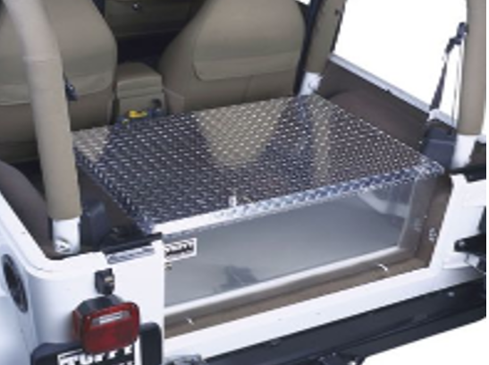
随身物品收纳
功能要求：
- 智能化储物空间：提供智能化存储区，支持自动感应与分类管理，提升物品存取效率。
- 多功能储物区域：根据不同需求，提供多样化的储物空间，如中央控制台、座椅下方、车门储物格等。
- 便捷存取体验：通过触摸屏、语音控制或自动开关等方式，简化物品存取流程。
- 空间优化设计：合理布局储物空间，最大限度利用车辆内部空间，提高收纳能力。
- 安全锁定功能：在重要区域如贵重物品存储区，提供智能安全锁定机制，确保物品安全性。
- 抗震防护设计：针对移动过程中的颠簸，储物空间设计需具备抗震功能，保护物品安全。
- 分类管理系统：支持不同类别物品的智能分类与管理，如文件、饮料、工具等。
- 节能环保设计：储物空间设计需考虑节能环保材料，以减少车内空间负担和重量。
激活仪式
功能要求：
- 身份验证：支持指纹识别、面部识别、或蓝牙与车钥匙结合的多种身份验证方式。
- 自动设备检测：在激活时，系统自动扫描车辆的各项设备状态，包括电池、电路系统、轮胎压力等，确保设备正常。
- 一键式激活：用户通过简单的按钮或语音命令，迅速完成激活流程。
- 数据安全性：使用加密技术保护用户身份和车辆数据，确保激活过程中的隐私安全。
- 自动化初始化：激活完成后，自动启用车辆相关配置，如座椅调节、空调、灯光、导航等。
- 反馈系统：通过视觉或语音通知用户激活成功，或出现异常情况时发出警示。
- 远程激活：支持通过手机APP或云端平台远程激活车辆，无需现场操作。
- 权限管理：根据用户身份自动控制操作权限，限制非授权人员的操作范围。
- 智能警报机制：在异常操作或安全风险时，触发警报系统及时提醒用户。
- 自动化驾驶支持：结合自动驾驶功能，提供更智能的激活流程，如自动车门解锁与设置初始化。
- 多重验证：支持多层次验证，包括密码、短信验证码等，确保激活流程的安全性。
司机状态监测
功能要求：
- 生理监测系统：集成心率、血压、体温等生理参数的自动监测功能，以实时掌握驾驶员健康状态。
- 疲劳评估系统：通过眼动追踪、脑电波监测等技术评估驾驶员疲劳状态，及时发出警报或建议休息。
- 驾驶行为分析：记录和分析驾驶员的操作习惯，如加速、刹车、转向等，发现异常驾驶行为并及时提醒。
- 环境优化：根据驾驶员状态调整座椅、空调、灯光等车内环境，以提升舒适性和安全性。
- 智能预警系统：通过语音提示、触摸屏或视觉反馈提醒驾驶员进行相应的安全调整（如保持车距、减速等）。
- 实时数据同步：将监测到的数据实时上传到车队管理系统，便于集中管理和分析。
- 多维度分析报告：生成详细的驾驶报告，包括健康数据、驾驶习惯、事故风险等，供企业或司机参考。
- 联网安全服务：支持与外部医疗机构或安全服务平台的联动，以便更及时地提供应急支持。
偏好设置
功能要求：
- 用户登录与身份识别：通过智能设备或车载系统，实现驾驶员或配送员的身份识别，确保偏好设置的安全性和唯一性。
- 个人化座椅设置：自动记忆座椅位置、角度、扶手高度等，支持一键切换不同偏好设置。
- 环境优化：根据个人偏好调节车内温度、湿度、车窗透光度等，提供舒适的驾驶环境。
- 导航与地图偏好：支持用户设置默认的导航模式、语言、路线偏好等，提供高效的路径规划。
- 驾驶模式调整：提供多种驾驶模式（如经济模式、高效模式、运输模式等），用户可以根据实际需求进行选择。
- 辅助功能配置：灵活调整辅助驾驶功能，如车道保持、自动泊车、碰撞预警等，以满足不同驾驶需求。
- 个性化快捷键设置：用户可自定义车辆功能的快捷操作键，简化操作流程，提高效率。
- 定制化仪表盘显示：根据用户需求定制仪表盘显示内容，优化驾驶信息的展示方式。
- 远程控制与同步：支持通过手机APP或PC端远程配置车辆偏好，自动同步到车载系统。
- 反馈与优化：定期根据驾驶习惯和反馈调整偏好设置，提升车辆的使用体验。
接收订单
功能要求：
- 智能订单推荐：根据货物种类和车辆匹配度推荐最合适的订单。这一功能需要系统通过AI算法分析当前订单需求与车辆的载重量、空间以及配送能力，从而为用户提供最匹配的订单推荐，减少错误订单的接收。
- 自动超载检测：实时检测车辆空间是否满足订单需求，避免超载。此功能通过传感器和数据分析来监测车辆载重量和空间利用率，确保车辆在接单时不会超过安全载重。
- 空间优化配置：动态调整车辆内部空间配置以满足不同订单的需求。此功能涉及到自动化的座椅折叠、货物摆放方案以及储物区域管理，优化车辆空间的利用，以提升订单接收效率。
- 路径规划与优化：提供智能化的路径规划，减少绕行，提升配送效率。这需要结合交通实时数据、路况、时间和订单优先级等因素来生成最优配送路线。
- 多订单接收与排序：支持接收多个订单，并智能排序，优化配送路线。系统能够通过算法自动排序多个订单，保证最优路径，同时处理多个任务，提升配送员的工作效率。
- 实时数据分析：通过大数据分析实时评估订单接收的经济效益与耗能。这包括对订单处理后的成本、盈利和配送时间等的智能评估，从而提供更合理的决策支持。
- 安全监控系统：保障接单过程中的安全性，支持异常状态报警与处理。这一功能利用摄像头、传感器以及其他安全设备，实时监控车辆状态，确保接单过程中的安全性。
- 多任务支持：在接单的同时，允许处理其他任务，提升工作效率。系统能够支持司机或配送员在处理接单任务的同时，处理其他辅助任务，如路径调整、客户沟通等，避免资源浪费。
- 用户交互与反馈：提供直观的界面和反馈机制，支持用户动态调整订单处理方式。用户可以通过触控界面或语音操作，实时调整订单参数和处理流程，提升使用体验。
路线规划
功能要求：
- 实时交通数据整合：通过集成实时交通信息、路况数据和天气条件，自动优化路径规划。
- 多目标路径规划：支持基于多个需求（如距离、时间、成本）的路径优化，满足不同场景下的配送需求。
- 自动化路径建议：系统根据订单、需求和限制条件，自动生成最佳路径方案。
- 动态路况更新：路线实时调整，根据交通拥堵、事故或恶劣天气条件及时优化路径。
- 分时分段路径规划：支持根据订单分时或分段路径规划，例如早晚高峰期或节假日配送。
- 智能停靠点选择：自动识别合适的停靠位置，如卸货点、临时停车点等，提升停车与装卸效率。
- 离线路径优化：支持在没有网络或信号弱的环境下，依然能够提供路径规划功能，确保配送顺畅。
- 数据分析与回溯优化：系统自动分析过去的配送数据，基于历史路径优化未来路线规划，提高线路精度和效率。
- 路线风险评估：对潜在风险路段（如偏远区域、高危路段）进行风险评估，并自动规划绕行路径。
- 多任务协同路径规划：支持多订单、多车辆协同路径优化，降低车辆资源浪费，提升整体配送效率。
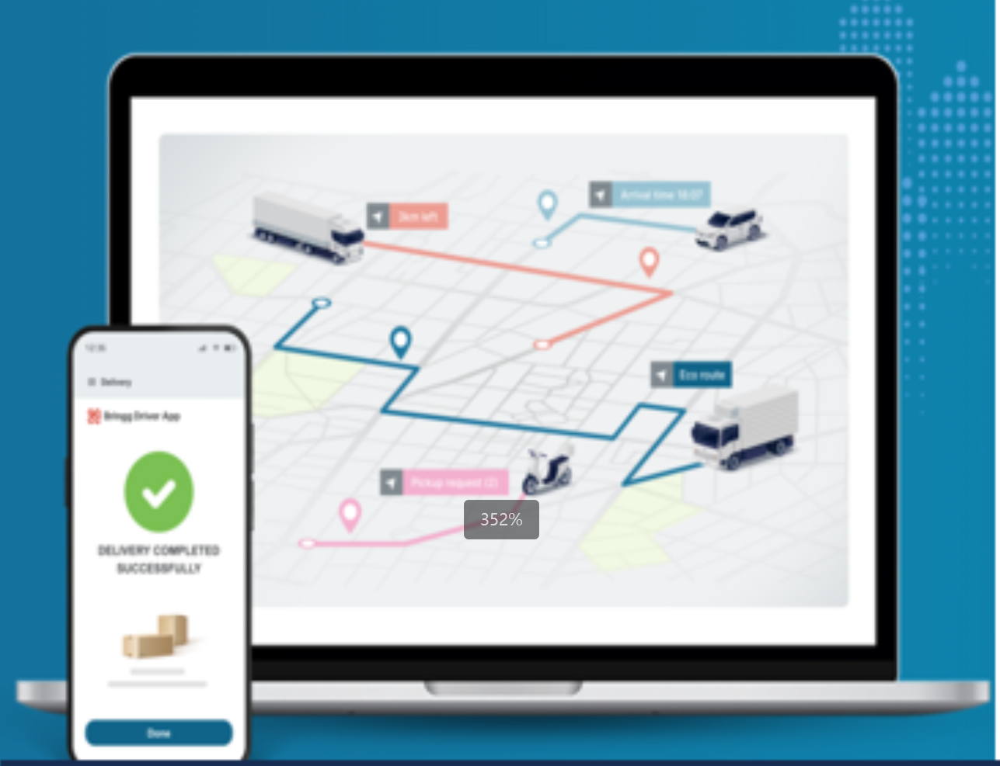
订单管理
功能要求：
- 订单接收与分配：支持接收来自不同渠道的订单（如线上平台、电话等），并根据配送员的能力、区域、车辆适配等条件进行自动分配。
- 实时任务管理：实时监控订单状态，从接单、出发、配送到完成的各个环节进行状态更新，并实时通知相关参与方。
- 多方数据协同：集成订单、货物、仓库、客户四方数据，确保每个环节的数据同步与共享。
- 路径优化与导航：根据实时订单与配送员位置，提供智能路径规划，优化配送路线，减少无效路径和延迟。
- 库存与仓储管理：支持与仓储系统的数据同步，实时更新库存信息，避免超出库存的订单分配。
- 异常订单处理：提供自动化异常检测机制，如货物缺失、配送延迟等，及时处理并通知相关人员。
- 客户反馈与满意度管理：自动生成客户满意度调查，定期收集用户反馈数据，优化配送质量和服务水平。
- 任务自动分配与调整：根据订单紧急程度、配送员能力和当前任务负载，自动调整和分配任务，提升配送效率。
- 数据分析与报告生成：提供基于订单管理数据的报表生成功能，支持运营分析和决策支持。
- 安全与权限管理：支持基于角色和权限的多层次访问控制，确保不同用户对数据的访问权限合理分配。
包装
功能要求：
- 货物包装防护：提供抗震、防潮、防压等专业包装，保障货物在运输过程中安全。
- 贴标签：为每个包装提供独立的智能标签，支持实时追踪货物状态和位置。
分拣
功能要求：
- 按照订单和运输路径将包裹进行分装：系统根据订单信息和优先级，对货物进行自动匹配和排序，确保效率最高。 数据实时同步：所有分拣过程中的数据，包括货物状态、分拣完成情况、错误分拣等，实时上传到仓库管理系统。
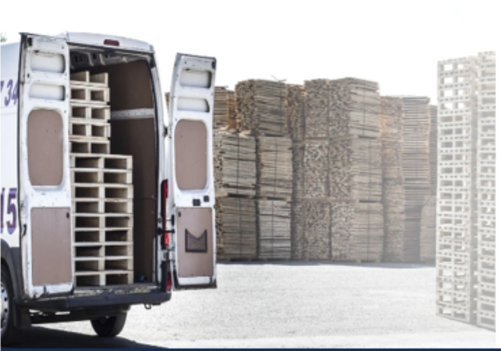
装车
功能要求：
- 装车规划：结合订单和路线信息，自动生成最优的装车顺序，减少无效行驶。
- 货舱门打开：270度打开，轻松开门。
- 辅助装车：升降台、传送带等将货物运到货舱。
安全检测
功能要求：
- 安全防护：通过智能锁定或缓冲设备，确保货物运输过程中的安全性。
- 载重检测：实时监测车辆负载，确保车内货物分布均匀，防止超载。
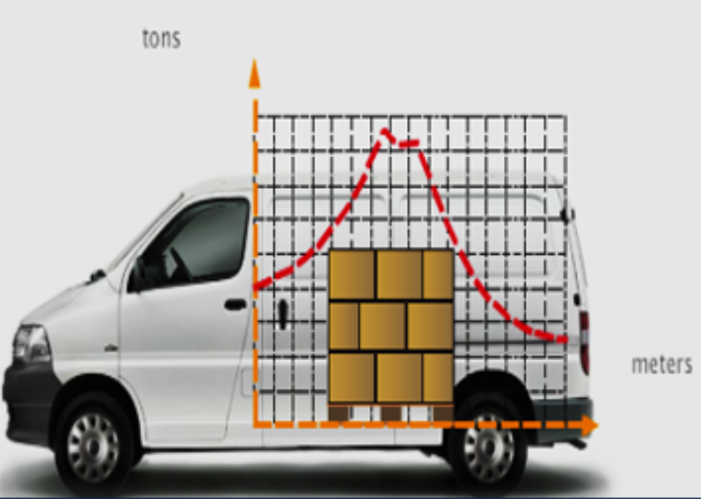
装载优化
功能要求：
- 自动化货物识别：通过智能扫描设备或RFID技术，实现货物的自动识别和库存采集。
- 智能货架管理：利用智能货架系统，根据货物体积、重量和配送需求进行空间规划和货物排序。
库存同步
功能要求：
- 实时数据同步：将装车后的库存数据与仓库系统进行实时对接，确保数据的一致性。
- 数据异常检测：实时监测库存数据的变化，识别并处理异常情况，如数量错误或损坏商品。
- 安全传输机制：使用加密和防篡改技术，保障库存数据在传输过程中的安全性。
- 远程库存管理：支持通过远程平台查看和管理库存信息，便于及时调整运输安排。
- 数据分析与报告：提供库存数据分析功能，生成实时报告，支持决策优化。
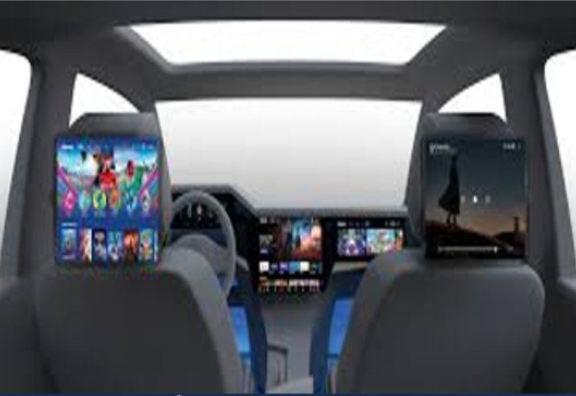
HMI交互
功能要求：
- 多模态交互：支持触摸屏、语音、实体按键等多种交互方式，实现无缝切换。
- 车辆状态监控：通过HMI界面实时显示车辆的各项状态，如油量、电池、电压等。
- 应急控制功能：支持在紧急情况下通过单一按钮或语音指令快速访问安全功能，如紧急制动、导航到最近维修点等。
- 自定义配置：用户可以根据个人习惯调整HMI的布局、显示内容和操作逻辑。
- 用户体验优化：根据驾驶员使用习惯，定期优化HMI的交互界面和操作流程。
- 数据同步与分析：支持HMI与远程系统的实时数据同步和分析，便于优化车辆管理。
- 安全性保护机制：支持HMI系统的加密保护和安全数据处理，保障用户信息隐私和系统稳定性。
常规驾驶体验
功能要求：
- 智能驾驶辅助：支持HMI系统与自动驾驶功能的协同，提供辅助驾驶信息和操作。
- 安全辅助系统：集成自动刹车、车道偏离警告、盲点监测等多重驾驶辅助功能，保障行车安全。
- 舒适座椅与空间设计：提供灵活调节的座椅、座椅加热与通风功能，以及宽敞的驾驶舱空间，提升长时间驾驶的舒适感。
- 智能导航与信息管理：支持实时导航、交通信息显示以及车辆状态监控功能，提供实时路况、路径规划和语音导航功能，优化驾驶路线。
- 无线连接与多媒体娱乐：支持手机、平板等设备的无线连接，提供娱乐与信息服务。
- 智能空调系统：根据环境变化自动调整车内温度，提升驾驶体验。
- 环境感知与控制：支持对外部环境的实时感知，如湿滑路面、恶劣天气等，及时调整车辆行驶策略。
途中沟通
功能要求：
- 实时语音通话功能：支持语音呼叫与接听，确保配送员能够随时与相关人员进行语音沟通。
- 即时消息推送：通过智能屏幕或手机推送消息，及时更新任务状态或接收客户反馈。
- 语音助手支持：提供语音输入和响应功能，用于快速获取任务信息、路线导航等。
- 多方协作：支持多人视频或音频会议，提升团队协作效率。
- 异常事件报警：在运输过程中，一旦发生异常情况，系统自动触发报警并通知相关人员。
- 路线与任务共享：通过系统与客户或配送中心共享实时运输路线与任务信息，提升透明度。
- 远程支持：配送员可通过远程支持功能，与专家或客服进行问题诊断与处理。
- 自动定位功能：实时显示配送员位置，支持与团队成员共享位置，方便定位与追踪。
- 离线状态支持：在通信不畅的情况下，具备离线消息存储与同步功能。
- 安全加密机制：确保途中所有通信数据的安全性，防止信息泄露或篡改。
后台实时支援
功能要求：
- 车辆故障救援：实时监控车辆状态，一旦发生故障，自动触发救援机制，通知服务团队。
- 紧急医疗救援：通过车辆系统紧急呼叫医疗服务，并同步位置信息，确保及时救援。
- 远程车辆控制：支持远程锁车、解锁、启动车辆以及控制空调等功能，提升车辆管理和安全性。
- 实时故障诊断：实时检测车辆系统故障，生成详细报告并发送给维修团队进行远程诊断与修复。
- 紧急通信通道：提供一键式紧急通信通道，确保用户能够快速联系后台支援团队。
- 车辆定位与跟踪：通过GPS与物联网技术实时监控车辆位置，确保运营路线的安全性。
- 多维度安全监控：集成摄像头、传感器等多维度设备，实时检测车辆周围环境，保障行驶安全。
- 智能预警系统：预测潜在故障或风险，并自动推送预警通知给后台服务团队。
车-人-货-环境互联
功能要求：
- 实时数据共享：支持车辆、驾驶员、货物与各利益相关者之间的数据同步与共享。
- 多方协同平台：集成客户、供应链、物流中心等利益相关者，实现多方资源整合与协作。
- 智能决策支持：基于多方需求和数据分析，提供智能化决策支持，优化运营流程。
- 客户满意度管理：通过实时反馈系统提升客户体验，满足不同客户的个性化需求。
- 资源优化配置：通过智能资源调度，提升车辆与货物的使用效率，降低浪费。
- 安全与风险管理：结合利益相关者的需求，实时评估和管理操作风险，保障多方利益。
- 自动化协作与支持：通过自动化系统实现各利益方的高效协作，减少沟通和操作成本。
- 数据隐私与合规管理：确保利益相关方间的数据共享符合隐私保护和法律合规要求。
- 实时报告生成：生成基于多方协作的操作报告，展示各方参与度和效果。
驾乘安全
功能要求：
- 实时驾驶状态监测：通过传感器和智能算法实时分析驾驶员疲劳、注意力分散、急刹等行为，及时发出警示。
- 自动化危险预警系统：通过前方车辆、障碍物检测和道路环境分析，提前预测并提醒潜在危险。
- 多维安全辅助：集成自动刹车、车道保持、盲区监测等多项安全辅助功能，保障行驶稳定。
- 异常驾驶行为提醒：在出现异常驾驶行为时，利用AI进行诊断，自动调节车辆状态。
- 疲劳与分心驾驶监测：结合人体工程学数据，监测驾驶员状态，提示休息和干预措施。
- 实时行车数据记录与分析：将行驶数据实时传输至后台，生成行驶安全报告，供安全评估使用。
- 紧急事件响应系统：支持自动报警、定位及远程安全援助，确保事故处理及时高效。
- 多方安全整合：与交通管理系统、救援中心等外部系统集成，提升整体安全保障水平。
- 系统自我校准与优化：系统能够根据行驶数据和反馈不断优化和完善安全功能。
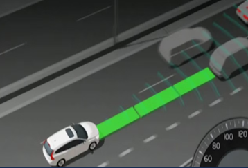
ADAS辅助驾驶 (l0-l2)
功能要求：
- 自动车道保持：通过摄像头和传感器实时分析车道信息，自动辅助驾驶员保持车辆在车道内行驶。
- 自适应巡航控制：结合雷达和传感器技术，自动调节车速以匹配前方车辆的速度，保持安全跟车距离。
- 紧急制动辅助：通过碰撞预警系统和自动刹车功能，在危险情况发生时进行自动干预。
- 前方障碍物检测与避让：实时识别前方障碍物或行人，并自动调整行驶路径。
- 盲区监测与预警：通过侧方摄像头和传感器，提醒驾驶员盲区内的车辆或障碍物，提升变道安全。
- 自动泊车功能：支持自动停泊功能，减少驾驶员泊车难度，提升停车安全性。
- 行驶数据记录与分析：记录车辆运行数据，支持驾驶行为分析和系统优化。
- 安全辅助警示：实时显示车内监测数据，如疲劳驾驶提醒、超速警告等。
- 高精度定位与地图服务：结合高精度导航和实时地图数据，提高辅助驾驶的精准度和安全性。
车内清洁
功能要求：
- 自动化清洁系统：实时监测车内环境，通过智能传感器自动检测污垢和灰尘，启动清洁设备。
- 智能吸尘与清扫功能：支持智能吸尘、拖地等功能，优化车内不同区域的清洁需求。
- 定时清洁与预约功能：提供定时清洁和远程预约清洁服务，满足用户不同使用场景需求。
- 空气净化与除菌功能：集成空气净化器，实时清除车内空气中的有害物质及细菌。
轻松离车
功能要求：
- 启动自动泊车功能：用户停车前，通过车载屏幕或语音助手选择自动泊车功能，系统根据车辆周围的环境和空闲车位自动规划停车路径。
- 完成精准泊车：系统通过传感器和摄像头监测车辆周围障碍物，并以安全速度自动完成停车操作，同时提示用户泊车完成。
- 检测车辆状态：泊车后，系统自动检测车门、车窗是否关闭，货舱是否锁定，以及车辆周围是否有未处理的安全隐患（如障碍物、未关紧的货舱门）。
- 一键自动锁车：用户通过车载屏幕、智能钥匙或手机APP触发一键锁车功能，系统自动完成车门锁定、车窗关闭、货舱检查，并切换至节能模式关闭非必要设备。
- 货物安全提醒：在锁车前，系统通过货舱传感器检测货物状态，如货物未固定或货舱门未锁紧，系统通过语音或车载屏幕提示用户处理。
- 离车后实时监控：车辆锁定后，用户通过手机APP查看车辆状态，包括锁车状态、实时位置及货舱安全状态；如果车辆发生异常（如车门被强行打开或货舱震动），系统第一时间推送警报通知用户。
- 远程控制与解锁：用户可通过手机APP随时远程查看和调整车辆状态，如解锁车门、重新锁车、开启货舱等。 自动生成停车报告：系统记录泊车位置、时间和车辆状态，并通过手机APP生成报告供用户或车队管理者查看，帮助优化管理。
产品使用支持
功能要求：
- 软件升级支持：系统自动检测车辆软件版本，提示用户是否有可用更新，用户通过车载屏幕或手机APP一键确认升级，系统自动完成下载并安装，升级完成后通知用户新版本功能和优化内容。
- 车主手册查询：用户通过车载中控屏或手机APP访问车主手册，支持关键字搜索并提供文本、图片和短视频形式展示，用户可将常用功能标记为“收藏”以便随时调用。
- 质保承诺管理：用户通过APP或车载系统查询车辆质保范围及剩余期限，系统提示质保到期时间并推荐续保方案，如车辆出现质保范围内故障，系统生成服务报告并提供最近服务网点信息。
- 客户支持服务：用户通过APP或车载系统启动“一键联系”功能连接客服团队，系统根据问题类型引导至相关客服模块，客服团队通过远程诊断功能检查车辆状态并提供解决方案或预约服务支持。
自定义需求
功能要求：
- 功能扩展需求提交：用户通过车载中控或APP提交自定义需求（如新增数据接口、特定业务模块或多屏协作功能），系统自动生成需求清单并匹配可行方案。
- 模块扩展与安装：根据用户需求，为中控系统新增功能模块（如货物监控界面、导航优先模式等）或定制接口扩展（如USB扩展、蓝牙设备对接）。
- 性能自定义配置：提供用户对中控系统的处理能力、存储能力及响应速度的定制化选择，支持新增高性能处理器或内存升级。
- 交互界面定制：允许用户调整中控界面的布局、快捷功能键、主题风格及多语言支持，以适应不同操作习惯和业务需求。
- 系统调试与优化：完成定制后，通过车载智能系统对新增模块或优化性能进行调试，确保扩展模块与原系统无缝协作，性能达到最佳状态。
- 用户验收与上线：扩展和自定义完成后，系统提供模拟操作界面供用户测试，并通过平台或服务中心确认验收后上线使用。
- 动态更新与后续支持：用户可通过手机APP或服务平台提交新增需求，系统支持模块化动态更新和远程性能优化，确保中控系统持续满足未来需求。
生态服务
功能要求：
- 设备互联与登录同步：用户通过车载中控系统或手机APP登录生态服务平台，系统自动同步用户个人账户信息及偏好设置，支持多设备（如手机、平板、电脑）间的无缝切换与数据共享。
- 软件互通与任务协作：车载系统支持与常用办公软件（如邮件、日程表、任务管理工具等）的集成，通过语音助手或中控屏快速处理工作事务（如安排配送计划、发送任务更新等）。
- 实时消息与团队沟通：用户通过车载系统实时接收并回复来自团队成员或客户的消息，支持语音转文本及自动回复功能，确保驾驶时的沟通安全与高效。
- 司机社区与社交互动：用户通过车载系统访问司机社区，参与讨论、发布动态或查阅其他用户的行程分享，支持点赞、评论及兴趣小组加入功能。
- 行程分享与位置共享：用户可一键将实时位置、预计到达时间及行程状态分享给团队或客户，系统支持设置权限控制确保隐私安全。
- 娱乐与社交整合：提供集成化的娱乐和社交应用（如音乐、视频、游戏、社交媒体），用户可在停车或休息时便捷访问，丰富驾驶外的生活体验。
- 智能推荐与优化：基于用户行为和社交互动数据，系统智能推荐社区内容、行车路线优化、团队协作建议或娱乐内容，持续增强用户体验。
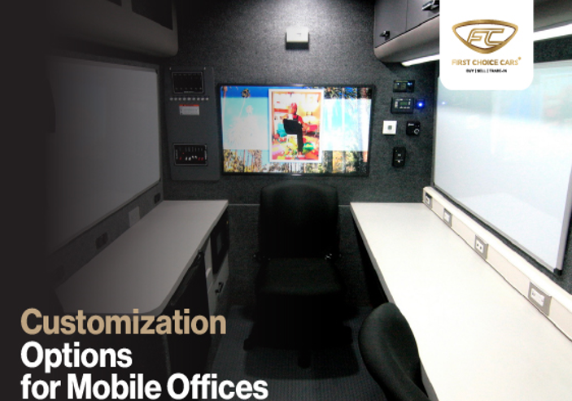
经济用能
功能要求：
- 能耗状态实时监测：车辆启动后，系统自动开启能耗监测功能，通过中控屏或语音助手实时显示油耗、电池电量、能量回收状态等关键数据，便于用户随时掌握车辆能源使用情况。
- 动态能耗优化：根据实时路况、车辆负载和驾驶行为，系统自动调整能量回收力度、动力输出模式及空调使用状态，并通过语音提示驾驶员优化操作（如匀速行驶或适时减速）。
- 智能导航与能源补充：结合导航系统和车辆能耗状态，系统动态规划最经济的行驶路线，并推荐沿途的加油站、充电桩或加气站，同时提供价格和排队情况信息。
- 历史数据分析与节能建议：用户可通过车载系统或手机APP查看每次行程的能耗表现，系统根据数据生成节能驾驶报告，并提供具体的驾驶优化建议（如减少急加速、优化货物装载）。 驾驶员节能行为评分：系统对驾驶员的节能表现进行评分，基于评分提供奖励机制或节能挑战活动，激励驾驶员采用更经济的驾驶行为。
- 车队用能管理：车队管理者通过平台查看所有车辆的能耗数据，系统自动生成车队用能分析报告并推荐节能策略，包括车辆调度优化或驾驶员培训计划。
- 能源使用成本预估：系统结合实时油价、电价等数据，为用户提供当前行程的能源成本预估，并根据成本变化提醒用户适时补充能源。
途中补能
功能要求：
- 剩余电量提醒：系统实时监测车辆剩余电量，当电量低于设定阈值时，通过中控屏和语音助手提醒用户查看当前续航里程和最近补能点信息。
- 推荐补能点：系统结合用户位置、行驶路线、补能需求和补能点实时信息（如价格、空闲状态）推荐最佳补能站点并提供详细信息。
- 选择和预约补能点：用户通过中控屏或手机APP筛选和选择补能点，支持在线预约充电桩或加油位以锁定补能服务。
- 导航和路线规划：系统根据选择的补能点规划最优行驶路线，实时调整路线并推荐备选补能点以应对交通或站点变化。
- 快速充电：到达补能点后，系统通过车辆与补能设备的自动对接快速启动补能，支持高功率快速充电模式并显示进度和预计完成时间。
- 补能完成提示与报告生成：补能完成后系统通过语音助手通知用户并生成补能报告，包括补充量、费用和续航提升情况，同步至用户APP或车队管理系统。
- 异常处理与备选方案：若补能点出现问题，系统实时通知用户并推荐最近备选补能点，紧急情况下提供节能驾驶模式支持以延长续航。
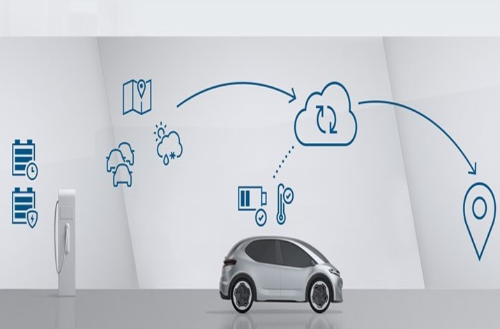
能源管理
功能要求：
- 实时能耗监测：系统实时采集车辆的能耗数据，包括燃油消耗、电池电量、能量回收情况等，通过中控屏和手机APP提供可视化展示，让用户随时掌握车辆能源使用状态。
- 能耗异常提醒：当车辆出现能耗异常（如燃油消耗过高、电池电量快速下降）时，系统自动发出提醒并提示用户检查车辆状态或调整驾驶行为。
- 驾驶行为优化建议：根据实时驾驶数据（如速度、加速频率、刹车使用情况），系统通过语音或中控屏提供优化建议（如匀速行驶、减少急加速等），帮助用户提升能源使用效率。
- 节能模式自动切换：在能量不足或低负载场景下，系统自动切换至节能驾驶模式，通过限制动力输出、优化能量回收等方式延长续航里程。
- 多能源使用分析：针对混合动力或多能源车辆，系统提供各能源的使用比例、效率及成本分析，帮助用户优化能源结构并制定更经济的使用方案。
- 历史数据分析与报告生成：系统定期生成能耗分析报告，展示单车或车队的能耗趋势、效率指标及节能效果，并提供改进建议，用户可通过APP或车队管理系统查看。
- 车队集中能源管理：车队管理者可实时监控所有车辆的能耗数据，通过平台对车队整体能耗进行分析，制定节能驾驶培训计划或优化车辆调度方案。
- 碳排放监测与目标达成：系统实时监测车辆的碳排放量，与用户设定的节能减排目标进行比对，提供达成目标的动态建议和路线优化方案。
车队出行
功能要求：
- 任务分配与确认：车队管理者通过管理平台为每辆车分配出行任务，系统将任务内容（如目的地、货物信息、时间要求）同步至驾驶员的车载中控屏或手机APP，驾驶员确认任务后系统自动启动行程记录。
- 实时位置与状态监控：系统通过车联网模块实时更新每辆车的位置、速度、燃油或电池电量等关键状态，车队管理者可通过平台地图查看所有车辆的运行状态。
- 优化的路线规划：系统根据任务目的地、实时路况和车辆当前状态，为每辆车生成最优行驶路线，并在途中动态调整路线以规避拥堵或突发状况，同时驾驶员可通过中控屏查看路线导航。
- 多车辆协作支持：在需要多辆车共同完成任务（如联合运输或交叉配送）时，系统通过智能调度功能优化车队协作方案，包括时间节点安排和车辆分工，确保任务高效完成。
- 实时沟通与指令下达：驾驶员可通过车载通讯系统与车队管理者或其他驾驶员实时沟通，系统支持语音转文本和群组消息功能，用于协调任务细节或传达紧急指令。
- 异常状况处理与提醒：当车辆发生异常状况（如偏离任务路线、车辆故障或延误），系统自动生成警报通知车队管理者，并推荐备选方案（如重新分配任务或安排紧急维修）。
- 任务进度与行程报告：任务完成后，系统自动生成行程报告，包括行驶里程、时间、能耗及货物配送情况，车队管理者可通过平台查看所有车辆的任务完成情况和综合分析数据。
- 车队整体出行分析：系统定期生成车队出行效率报告，包括平均行驶时间、能耗表现和任务完成率，提供优化建议用于提升整体运营效率。
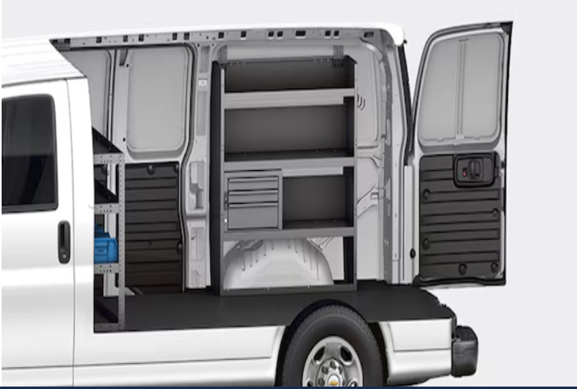
停车
功能要求：
- 确认配送点：系统根据配送任务信息，结合用户当前位置和目的地，自动确认最优配送点；用户通过车载中控屏或手机APP确认配送地址，并获取配送点相关信息（如接货人、联系方式、可用停车区域）。
- 停车位推荐：系统根据配送点的具体位置、车辆特性及用户需求（如靠近货舱装卸区域、停车时长）推荐可用停车位，提供停车位详细信息（如车位类型、价格、空闲状态）并支持排序筛选。
- 导航至停车位：用户选择目标停车位后，系统生成最优行驶路径并实时导航至停车区域，避免用户在配送点附近无效绕行，确保车辆停放在适合货舱门开启的区域。
- 智能泊车辅助：到达停车区域后，系统通过车载传感器自动检测周围空闲车位，并提供车位选择及泊车操作的实时指导；用户可选择手动泊车辅助或全自动泊车功能完成停车操作。
- 货舱门开启与安全检查：停车完成后，系统检测货舱周围环境，确保没有障碍物或危险状况后，允许用户通过中控屏或手机APP远程开启货舱门，同时实时监控货舱区域的安全状态，方便货物装卸。
- 停车安全监控：停车完成后，系统通过车载摄像头和传感器实时监控车辆及货舱周围环境，若检测到异常情况（如碰撞、非法靠近、货物被移动），立即通过APP或车载屏发出警报通知用户。
- 停车费用结算：系统自动记录停车时长和费用，支持无感支付功能，用户可通过车载系统或手机APP查看停车费用详情并完成在线支付。
- 离车导航：用户离开车辆后，系统通过手机APP记录车辆停车位置，并在返回时提供步行导航服务，帮助用户快速找到车辆和货舱位置。
- 停车历史记录与分析：系统保存用户的停车记录，提供使用报告（如常用停车场、平均停车时长和费用），帮助用户优化停车习惯和选择停车场。
货物识别与分配
功能要求：
- 确认送货任务：系统根据车辆当前位置匹配当前送货点的任务信息，显示该点订单清单、货物详情及任务要求，用户通过车载中控屏或APP确认送货任务。
- 货物信息快速识别：通过条形码扫描仪、RFID读取器或货物标签图像识别设备，对货物进行信息提取，识别货物编号、订单号、重量、目的地等详细信息，并实时在系统中记录和显示。
- 动态任务分配：系统根据订单需求和任务要求自动分配货物至对应分区，并提供分配状态提示（如灯光、声音或显示屏引导），确保货物信息与任务要求一致。
- 分配准确性校验：在货物分配完成后，系统自动核对已分配货物与订单要求，提醒用户检查遗漏或错误分配情况，确保所有货物都处于正确的分配状态。
- 实时数据更新与反馈：分配过程中的货物数据实时同步至车队管理平台，驾驶员可通过中控屏查看分配进度及任务完成情况，确保后续流程顺畅。
卸货
功能要求：
- 场地检测与准备引导：系统通过传感器扫描卸货区域，检测空间大小、地面状况（如湿滑、障碍物）及卸货台高度，向用户提供调整建议（如优化车辆位置或清理场地）以确保安全的卸货操作环境。
- 智能工具推荐与操作支持：根据货物重量、尺寸和卸货需求，系统智能推荐最适合的卸货工具（如电动叉车、手推车、滑轨系统等），通过指示灯或屏幕定位工具存放位置并提供操作提示。
- 货物识别与动态分配：通过条形码、RFID或图像识别技术快速确认货物信息，系统根据交付优先级和货舱布局动态生成最佳卸货顺序，并实时指引用户精准定位目标货物。
- 智能搬运辅助：针对过重或大件货物，系统自动启动智能搬运设备（如电动推车、机械臂），结合搬运路径规划实现货物从货舱到卸货台的安全转移，同时动态监控货物稳定性并提示调整。
- 实时进度监控与提醒：系统记录卸货任务进度，显示已完成和待完成的货物清单；若发生遗漏、搬运错误或异常（如货物滑落或卡滞），系统通过语音或屏幕发出提醒并提供解决建议。
- 货舱管理与安全检查：卸货完成后，系统检查货舱内的剩余货物和工具归位情况，通过自动扫描确认无遗漏，并提示用户完成一键式货舱门关闭操作，确保门锁状态安全无误。
- 任务完成确认与报告生成：卸货完成后，系统自动生成详细报告，包括货物清单、搬运时间、使用工具记录和异常情况处理，报告同步至车队管理平台供用户查看和存档。
配送
功能要求：
- 任务确认与路线规划：系统根据配送任务列表和目的地信息，结合实时交通状况和配送时间要求，自动生成最优配送路线，并在中控屏显示分段导航及预计到达时间。
- 动态任务调整：根据实时交通、客户临时变更需求或优先级调整，系统支持动态更新配送顺序，并通过导航系统重新规划路线，确保任务完成效率和灵活性。
- 智能交付支持：到达配送点后，系统通过扫码、GPS定位或NFC技术确认交付地点和收货人身份，支持电子签收和自动生成交付记录，确保货物交付的精准性与安全性。
- 客户实时通知：系统向客户实时推送配送进度（如预计到达时间、当前配送位置），并在接近交付时发送提醒以确保客户准备接货。
- 异常处理与支持：在配送过程中，如发生突发事件（如车辆故障、无法接收货物），系统提供备选解决方案（如联系备用车辆、重新安排交付时间）并同步更新客户信息。
- 任务完成记录与报告生成：配送任务完成后，系统生成详细报告，包括配送时间、货物状态、交付反馈和异常处理记录，报告同步至车队管理平台供后续审阅。
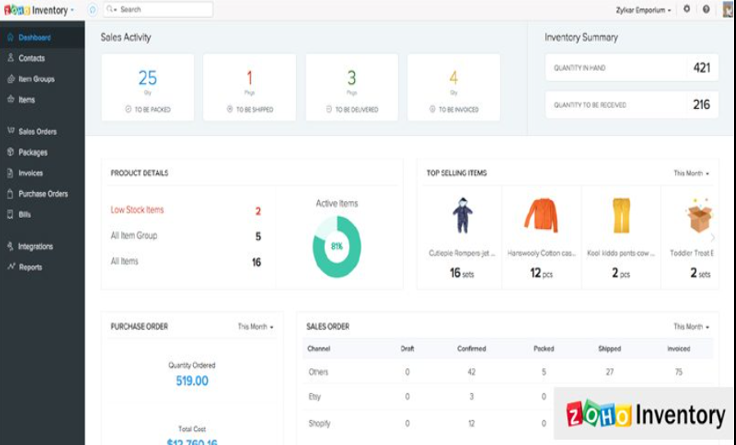
配送信息同步更新
功能要求：
- 任务启动与同步：配送任务开始时，系统将配送任务清单（包括货物详情、目的地、优先级）和推荐路线同步至驾驶员的车载系统，同时推送任务起始状态至车队管理平台与客户系统，确保各方同步了解配送任务的初始信息。
- 车辆位置与进度更新：通过GPS模块实时跟踪车辆位置，系统将车辆当前所在位置、行驶路径及预计到达时间动态同步至车队管理平台和客户系统，并在客户端展示配送剩余时间和当前状态。
- 货物状态同步：货舱传感器监测货物环境（如温度、湿度、振动等）和位置状态，将监测数据实时同步至车队管理平台，若货物出现异常（如倾斜、超温），立即发送警报并向相关方（驾驶员、管理者）推送建议解决方案。
- 异常状况实时通知：若配送过程中出现延误（如交通拥堵、车辆故障）或客户变更需求，系统实时推送异常信息至车队管理平台，同时向驾驶员提供备选路线或调整任务的指令，客户端也收到预计延迟或调整后的新配送时间。
- 交付确认与记录同步：在完成配送点的交付后，系统通过电子签名、扫码确认或NFC识别自动记录交付完成信息，并将签收记录（包括交付时间、收货人确认等）实时同步至车队管理平台和客户系统。
- 客户端进度透明化：系统为客户提供实时配送信息推送，包括车辆位置、预计到达时间、当前进度，并在交付前发送提醒通知，确保客户提前做好接货准备。
- 任务完成总结与报告生成：配送任务完成后，系统自动生成总结报告，包括行驶路径、实际交付时间、货物状态及异常处理记录，报告同步至车队管理平台供管理者分析和优化调度。
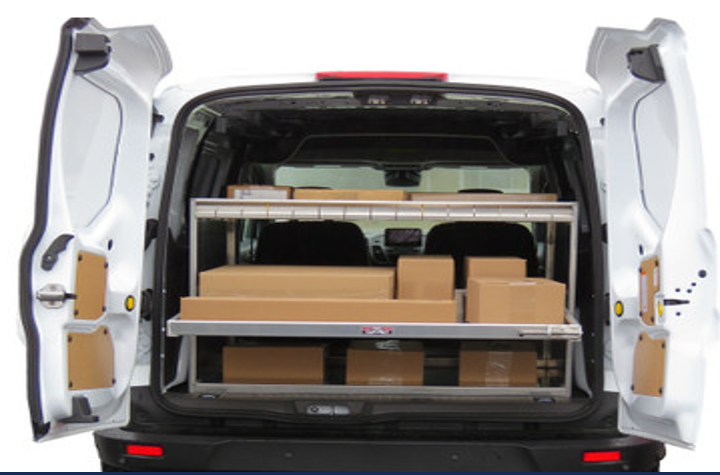
货舱整理
功能要求：
- 工具收纳：系统实时监控卸货工具（如手推车、电动滑轨、机械臂等）的状态，并在工具使用完成后，通过货舱内的存放指引灯和中控屏提供合理的工具归位方案，确保工具的便捷收纳和快速取用。
- 工具维护与状态监测：系统监控工具的使用状态（如电量、损耗程度），提醒用户对工具进行必要的维护或充电，并记录工具归位的时间和位置，避免遗漏或损坏。
- 整理完成确认与同步：货架整理和工具收纳完成后，系统生成整理确认信息，包括货物位置、工具归位状态及货舱布局图，并同步至车队管理平台，支持后续配送任务的高效执行。
现场问题处理
功能要求：
- 问题实时识别与提醒：系统通过多传感器和环境监测技术实时监控货物、车辆和外部环境状态，识别异常情况（如货物损坏、温湿度异常、车辆抛锚或道路拥堵），并通过车载中控屏或语音警报提醒驾驶员。
- 问题分类与优先级判断：系统根据问题类型（如货物问题、车辆问题或任务变更）和影响程度，自动分级问题的优先级，提示用户紧急处理方案或继续当前任务的最佳操作流程。
- 提供解决方案建议：系统结合问题类型和任务数据，自动生成可行的解决方案，例如：货物问题时推荐最近的维修点或备用
- 货物操作流程；车辆故障时提供道路救援服务；道路受阻时动态规划绕行路线；客户变更需求时重新调整配送计划。
- 远程支持与协作：系统支持驾驶员通过车载系统直接联系车队管理平台或技术支持中心，实时获取人工协助或远程指导，必要时推送问题信息至相关方（如客户或合作方），协调多方协同解决问题。
- 工具与设备调动：系统根据问题需求引导用户取用适合的工具（如卸货工具、货物修复装置）或激活车载辅助设备（如智能搬运设备、货舱调节系统），并提供具体使用指引以辅助问题处理。
- 处理进度跟踪与更新：在问题解决过程中，系统实时记录处理进展，向车队管理平台同步进度信息，并向客户推送预计处理完成时间和后续交付状态。
- 问题解决确认与记录：突发问题解决后，系统自动生成完整的处理记录，包括问题描述、解决方案、耗时及相关责任方确认，记录同步至车队管理平台，用于后续审查和优化问题应对流程。
防盗防抢
功能要求：
- 实时环境监测与威胁识别：系统通过传感器、摄像头及周边环境扫描，实时监测车辆周围活动（如人员靠近、车辆撞击、异常移动），自动识别潜在威胁并触发相应的应对机制。
- 智能预警与提示：当检测到潜在风险时，系统通过车载显示屏、声音提示或手机APP向用户发出警告，说明威胁类型（如货舱异常、车窗破损）并建议用户采取相应措施。
- 自动防护机制：系统在检测到突发情况时自动关闭车窗、货舱门及锁定车辆，阻止外部侵害，并启动防护功能（如货物固定装置、货舱温度调节）以保障货物安全。
- 车辆防盗与定位：在车辆遭受非法开门或移动时，系统立即触发警报并锁定车辆，同时通过GPS模块实时追踪车辆位置，将信息推送至用户和管理平台以便快速定位和响应。
- 高清摄像与录像存储：系统在突发事件发生时，启动内外高清摄像头进行录像，记录威胁发生过程，并将视频存储至云端以供后续取证或分析。
- 智能报警灯与外部威慑：当车辆或货舱受到威胁时，系统自动启动智能报警灯并发出声光警示，对周围环境形成威慑效果，同时争取用户反应时间。
- 多方通知与协同：在威胁确认后，系统自动向用户、车队管理平台及必要的紧急服务（如报警中心或道路救援服务）发送实时通知，确保相关方能及时响应和协同处理。
- 数据记录与报告生成：事件处理结束后，系统自动生成报告，包括事件类型、处理时间、车辆状态及相关影像记录，并同步至管理平台供后续分析和优化。
- 电子围栏监控报警功能：监控和控制物体、人员或车辆的活动。当设备或人员进出设定的区域时，系统会自动触发警报或采取相应的行动。
配送后检查
功能要求：
- 系统数据同步与任务关闭：在检查完成后，系统对配送任务进行总结，包括交付状态、工具归位情况、车辆状态等，自动同步至车队管理平台并生成配送任务报告供管理者审阅。
- 后续任务准备状态提示：系统在检查完成后提供车辆的下一任务准备状态（如燃油、电量、工具配置等），提醒用户是否需要补充或调整，确保车辆始终处于良好运行状态。
量化计算ESG
功能要求：
- 实时能耗与碳排放数据采集：通过传感器监测燃油消耗、电力使用及行驶距离，系统实时采集能耗和排放数据并计算车辆的单位里程能耗及碳排量。
- 碳排放绩效对比与优化建议：基于车辆历史运行数据和同行业平均值，生成碳排放绩效对比图，自动识别碳排放过高的运行环节，并提供碳减排优化建议（如调整驾驶行为或优化路线规划）。
- 安全驾驶行为分析：利用驾驶辅助系统记录驾驶行为（如急刹车、急加速、超速），系统自动分析不安全驾驶行为的发生频率与分布，生成驾驶安全评分并提供行为改进建议。
- 运营效率智能分析：结合车辆运营时间、停机时间和行驶距离，系统计算车辆运输效率（如单位时间的载货量、总行驶里程），识别效率低下的运营环节并建议调整任务规划或路线优化。
- 工作量动态核算与分布：通过对配送任务和运营数据的动态整合，系统量化每辆车的完成任务量（如货物总量、完成的订单数）和时间分配，并生成工作量分布报告供车队管理者参考。
- 趋势分析与可视化呈现：系统将能耗、碳排放、安全行驶、效率和工作量等数据进行长期趋势分析，并通过可视化图表（如折线图、柱状图）展示，帮助用户直观了解车辆ESG绩效变化情况。
- 异常检测与通知：实时监测运营过程中异常数据（如异常能耗、超标碳排放或频繁不安全驾驶行为），触发警报并推送通知给驾驶员和管理者，避免持续性问题影响运营表现。
- 报告生成与合规支持：基于系统计算结果生成标准化的ESG报告，包括能耗、碳排放、安全行驶表现和效率等指标，并提供符合企业社会责任和监管要求的分析支持。
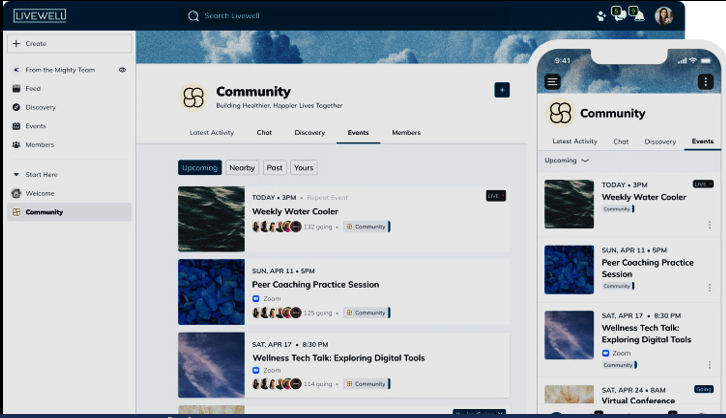
虚拟社区互动
功能要求：
- 智能成就数据采集与整合：系统自动从车辆运营数据中提取绿色配送相关指标（如碳排放减少、燃油节约、配送效率提升），帮助用户快速生成数据基础的成就分享内容。
- 动态可视化展示：系统将用户上传的绿色配送成就数据转化为图表、卡片或短视频形式，通过可视化动态展示强化用户成就的直观性与传播性。
- 一键式成就分享：用户通过系统快速生成成就内容后，可以一键分享到社区的公共展示区，并支持选择指定主题分类，确保内容展示的高效与精准。
- 高质量评论与互动推荐：系统根据用户分享的成就内容分析互动留言质量，并智能推荐优质评论或用户问题，帮助分享者高效参与互动。
- 个性化成就推荐：系统基于用户行为和兴趣标签，为用户推荐与其车辆、配送模式相似的绿色配送成就案例，帮助其获得灵感并优化实践。
- 积分与激励管理：系统记录用户的互动行为（如分享、评论、点赞），提供积分奖励和成就徽章，提升用户的社区参与感和分享动力。
- 互动统计与分析：系统为分享者提供成就内容的互动数据统计（如点赞数、评论数、转发数），并通过数据分析反馈用户的影响力，促进内容改进和持续分享。
- 互动场景安全保障：系统通过自然语言处理技术实时审核评论内容，过滤低质或不友好的评论，确保社区环境的健康与互动的积极性。
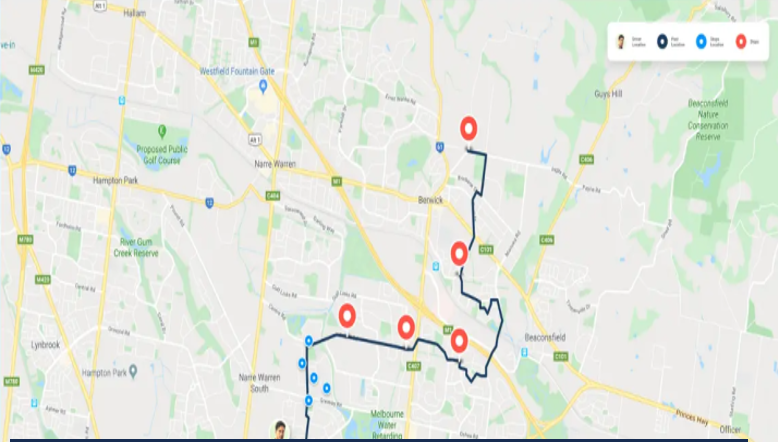
结束返程
功能要求：
- 返程路径智能规划：根据车辆当前位置、剩余能源和实时交通状况，生成最优返程路径，并动态调整以应对路况变化。
- 补能需求分析与推荐：结合返程路径和车辆能源状态，智能推荐沿途补能点（如充电站或加油站），并提供导航指引。
- 驾驶辅助支持：返程过程中启用自动巡航、车道保持、碰撞预警及盲区监测功能，确保驾驶安全。
- 实时状态监控与提醒：系统监测车辆能源水平、轮胎压力、发动机温度等状态，如发现异常及时提醒驾驶员调整计划或停车检查。
- 停车与任务完成确认：车辆到达基地或指定停放区域后，系统确认停车状态并自动标记返程任务完成。
- 车辆状态检查与报告生成：返程完成后，系统自动检测车辆外观、货舱清理及设备归位状态，并生成车辆检查报告。
- 返程数据记录与总结：记录返程过程中的里程、耗时、能耗等数据，生成返程报告并同步至车队管理平台，用于运营优化。
- 车辆维护提醒：根据返程数据分析车辆运行状况，若发现保养或维修需求，系统自动生成维护提醒并推荐维修服务点。
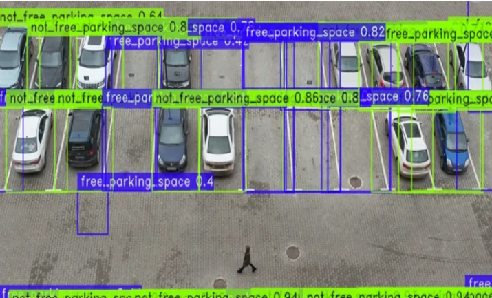
车辆入库
功能要求：
- 入库任务分配与通知：系统根据车辆状态（如位置、能源水平、任务完成情况）和仓库泊位空闲情况，自动分配入库任务并通过车载系统通知驾驶员。
- 动态路径导航与引导：结合车辆当前位置、仓库布局和实时环境数据，生成入库路径，系统实时动态更新导航指令并提供清晰路径引导。
- 自动避障与安全监测：车辆进入仓库过程中，系统通过传感器实时监测周围障碍物（如其他车辆、行人、障碍物），并提供主动避障或紧急制动支持，确保入库安全。
- 精准泊车定位：车辆通过自动驾驶功能，根据泊位大小和位置精准调整停车路径，确保车辆安全停放到指定泊位，避免偏移或占用多余空间。
- 夜间入库支持：在低光或夜间条件下，系统自动激活红外感知和辅助照明功能，为驾驶员或自动驾驶模块提供清晰的环境感知，保障夜间入库操作的安全性和准确性。
- 泊车完成确认：停车完成后，系统自动检查泊位对齐情况及环境状态，并确认停车完成信息同步至车队管理平台。
- 车辆状态检测与提醒：完成泊车后，系统自动检测车辆外观状况（如划痕、损伤）和运行状态（如胎压、电量、货舱状况），并提示驾驶员进行后续检查或维护。
- 入库数据记录与同步：系统记录停车位置、时间、车辆状态及任务完成信息，实时同步至车队管理平台，为后续调度和车辆运营优化提供支持。
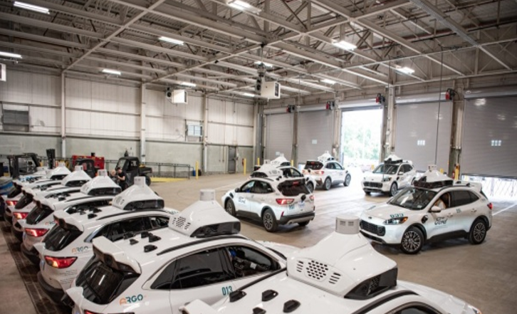
入库补能
功能要求：
- 智能调度与任务分配：系统根据车辆的任务进展、电量/燃油状态和仓库补能设备空闲情况，自动分配补能任务并通知驾驶员。
- 路径规划与自动导航：车辆根据系统规划的路径导航至指定补能仓库，并在接近仓库时切换至自动驾驶模式完成入库。
- 自动入库与精准停靠：车辆通过激光雷达、摄像头或超声波传感器实现避障、精准入库操作，并准确停靠在指定补能设备前。
- 补能设备自动对接：车辆与充电桩或加油设备自动完成接口连接，系统检测连接状态并启动补能操作。
- 动态补能控制：根据车辆能量需求，系统实时调节充电功率或燃料流速，优化补能效率并显示剩余补能时间。
- 补能状态实时监控：系统通过传感器监控补能进度、电量增加、功率波动等，并将状态同步到车载屏幕和管理平台。
- 异常检测与安全响应：系统实时检测补能设备与车辆连接状态、环境温度、电流波动等，发现异常立即停止操作并通知用户与管理人员。
- 补能完成与断开接口：补能完成后，系统自动断开设备与车辆接口，确认补能完成并生成数据报告。
- 出库引导与路径优化：车辆完成补能后，系统引导车辆安全离开仓库，并规划后续任务的最优路径。
- 补能数据记录与分析：系统记录补能耗时、充电量、费用等数据，同步到车队管理平台，用于设备利用率分析和优化运营策略。
车辆交接
功能要求：
- 交接任务智能分配与通知：根据车辆状态和需求，系统分配交接任务并通知交接双方。
- 车辆状态全面检查：自动检测车辆电量、燃油、胎压、发动机温度等关键参数并生成检测报告。
- 车辆货舱与工具检查：提醒双方检查货舱清理及工具归位，标记异常项。
- 车辆外观影像记录：通过高清摄像头拍摄车辆外观，记录划痕和损伤情况。
- 交接过程全程记录：启动车载摄像头实时记录交接过程，确保交接透明可追溯。
- 电子交接单生成与确认：自动生成交接单，包含车辆状态、外观记录及双方签署信息。
- 交接异常提醒与责任划分：发现异常时自动提醒并记录，生成责任界定提示。
- 交接数据同步与归档：将交接相关数据实时同步至车队管理平台并存档。
- 后续任务分配：根据车辆状态推送下一任务（如补能、保养或配送任务）。
- 车辆状态更新与通知：完成交接后更新车辆状态并通知相关人员。
工作量评估
功能要求：
- 工作量数据输入：用户可以录入每个运输任务的基本信息，包括起止地点、运输物品类型、预计时间、所需车种等，确保任务数据完整。
- 车队资源监控：系统能够实时监控车队中每辆车的工作状态，包括任务量、运行时间、休息时间等，确保车队资源得到合理利用。
- 工作量分配算法：系统通过分析每辆车的当前工作量、历史表现以及驾驶员的工作时长，自动推荐最佳的任务分配方案，避免任务过度集中或不均衡分配。
- 工作量预测与规划：基于历史任务数据和当前工作负载，系统能够预测未来的工作量，并帮助用户合理安排车辆和驾驶员的任务，提高车队运作的效率。
- 超载与低效提示：系统根据实时监控数据，自动识别潜在的超载或低效运作情况，并及时提醒用户采取措施进行调整。 驾驶员工作量分析：系统能够分析每个驾驶员的工作量，包括工作时间、任务类型、运输距离等，确保驾驶员的工作强度处于合理范围。
- 动态调整与优化：在任务进行过程中，系统可以根据实时反馈（如交通状况、天气等）动态调整任务安排，优化工作量分配。
- 报表与数据可视化：系统自动生成工作量报告，并通过图表、数据分析等形式展示工作量分布、车队负载情况等，帮助用户深入理解工作量情况。
- 任务优先级设置：用户可以为不同的任务设置优先级，系统根据任务的紧急程度和重要性自动调整工作量分配，确保关键任务优先完成。
- 历史数据对比分析：系统能够通过对比历史工作量数据，帮助用户评估车队工作效率和资源利用率，为未来的决策提供数据支持。
安全评估
功能要求：
- 安全评估模块：用户可以根据车辆类型和使用场景，选择合适的评估模板，确保评估标准化、科学化。 安全检查项配置：系统允许用户根据车辆的关键安全部件（如刹车系统、转向系统、车身结构等）设置检查项，确保评估的全面性。
- 驾驶员行为评估：系统能够记录和分析驾驶员的驾驶行为，如急刹车、急加速、超速等，并评估其对安全的影响。
- 实时数据采集与监控：通过车载传感器、GPS、行车记录仪等设备，系统能够实时采集车辆运行数据，监控关键安全指标，如车辆速度、胎压、油温等。
- 风险评估与预警：基于实时数据和历史记录，系统自动进行安全风险评估，并发出预警信号，提示用户潜在的安全问题。
- 安全评分与报告生成：系统通过评估结果生成安全评分，并自动生成详细的安全评估报告，报告包括各个检查项的状态、存在的安全隐患及建议的改进措施。
- 故障记录与跟踪：对于在评估过程中发现的安全隐患，系统能够自动记录并跟踪其处理进度，确保隐患得到及时解决。
- 多维度数据分析：系统通过对历史数据的分析，提供安全趋势预测，帮助用户识别长期存在的安全问题和改进方向。
- 安全培训建议：根据评估结果，系统能够为驾驶员提供个性化的安全培训建议，帮助其改进不当驾驶习惯，提升整体安全水平。
- 评估报告共享与协作：用户可以将安全评估报告分享给相关部门或团队，支持协作处理安全问题，并根据反馈进行调整优化。
工作日志
功能要求：
- 记录工作日志：用户可以手动输入每天的工作内容，包括任务描述、进展情况、所花时间等。
- 日志分类：用户可以为每条日志添加标签，如“项目进展”、“会议记录”、“待办事项”等，便于后续查询和管理。
- 自动化总结：系统能够根据用户输入的日志自动生成周报或月报，并以可视化的方式展示工作进展。
- 日志检索：用户可以根据日期、标签或关键字进行日志搜索，快速找到需要的内容。
- 提醒功能：系统能够设置日志记录的提醒，确保用户按时更新工作日志，避免遗漏。
- 日志共享与协作：用户可以选择将日志分享给团队成员或管理者，支持评论与反馈，促进团队协作。
- 与日程同步：系统与日历或任务管理工具进行同步，自动从日程中提取任务并生成工作日志，避免重复输入。
- 日志编辑与更新：用户可以随时编辑已录入的日志，修改进展、增加补充说明，确保记录的准确性。
- 数据分析：系统提供工作日志的数据分析功能，生成工作效率、任务完成度等报告，帮助用户分析工作表现。
- 多设备同步：用户可以在不同设备上访问和更新工作日志，确保数据实时同步，方便随时查看和记录。
结束后检查
功能要求：
- 检查项录入：用户可以根据商用车的不同部件和系统（如发动机、刹车、轮胎等）设定检查项，确保检查全面。
- 标准化检查流程：系统提供标准化的检查流程模板，用户按照既定流程逐项进行检查，避免遗漏。
- 实时记录检查结果：用户可以实时记录每个检查项的结果，包括“正常”、“异常”、“待处理”等状态，确保记录精准。
- 问题预警与提示：系统通过对检查结果的智能分析，自动识别潜在问题并向用户发出预警提示，帮助及时发现隐患。
- 维护历史关联：用户可以查看与车辆相关的历史维护记录，参考过往问题及解决方案，辅助当前检查和决策。
- 语音识别与录入：用户可通过语音输入方式记录检查结果，减少手动输入的时间和工作量，提高检查效率。
- 自动生成报告：系统能够根据检查记录自动生成详细的检查报告，包括检查项、结果、建议等，方便后续查看和共享。
- 报告共享与反馈：用户可以将检查报告分享给相关人员或团队，支持反馈和意见收集，以便进一步改进车辆维护策略。
- 跨设备同步：系统支持跨设备（如手机、平板、电脑等）同步，确保检查记录在不同设备上随时更新和查看。
- 故障跟踪与处理：对于检查中发现的异常问题，系统能够跟踪后续的故障处理过程，并记录解决方案和修复时间。
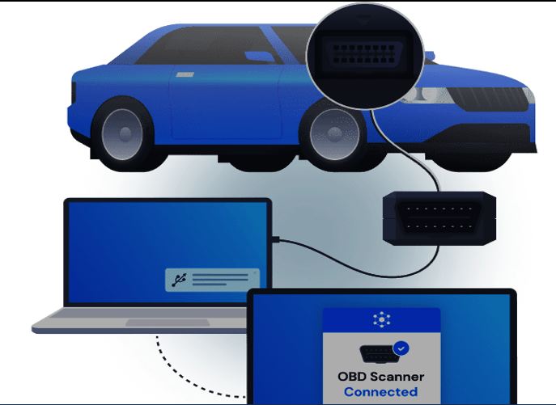
维保支持
功能要求：
- 车辆健康监测与诊断系统：通过车辆传感器和车载诊断系统实时监控车辆状态，检测发动机、刹车系统、电池、轮胎等重要部件的健康状况。在发现潜在问题时，系统自动向驾驶员或车队管理者发送预警信息，提醒进行检查或维修。
- 维保提醒与周期管理：系统根据车辆的行驶里程或使用时间，自动计算并提醒用户进行定期保养。用户可以设置自定义的维保周期，并且能够查看每一项维保记录，以便优化维保策略。
- 一键预约维修服务：用户通过车载系统或移动应用可以直接一键预约维修服务，选择服务站和维修时间。系统提供维修进度跟踪功能，用户可以实时查看维修状态，并获得完成时间的预估。
- 在线故障诊断与远程支持：提供远程故障诊断服务，用户可通过车载屏幕或手机App将车辆的故障信息传送给技术支持团队，获取专业的诊断结果。若问题较为复杂，系统可直接安排工程师进行远程指导，或者指引用户前往指定的维修站点。
- 维修记录与历史查询：系统会保存车辆的所有维修记录，供用户随时查询。 提供历史维保数据分析报告，帮助车队管理者了解每辆车的维修频率、维修项目、费用等，便于后续管理决策。
- 应急救援服务：提供24/7的应急救援服务，驾驶员可以通过系统请求拖车、现场修理等服务。系统会根据车辆的当前位置自动调度最近的救援服务，缩短响应时间。
- 维保服务评分与反馈：用户可对每次维修服务进行评价，帮助其他用户做出选择。系统根据评分提供改进建议，确保服务质量的不断提高。
- 车队管理平台：为车队管理者提供统一的平台，能够查看车队所有车辆的健康状态、维修记录和维保需求。平台支持多车辆调度与资源分配，优化维修与保养安排，提高车队管理效率。
- 智能配件管理与采购：系统会根据车辆使用情况和维保记录，智能推荐需要更换或补充的配件。 提供便捷的配件采购渠道，确保用户能够快速获得所需零件，并减少停运时间。
- 维保报告与费用透明：每次维修服务后，用户可以获得详细的维保报告，包括维修内容、使用的配件、工时及费用清单，确保费用的透明度。提供报表导出功能，便于车队管理者做财务分析与管理。

残值评估
功能要求：
- 车辆数据输入：用户通过简单的界面输入商用车的基本信息，如品牌、型号、生产年份、行驶里程、车辆状态等。提供选择框或填写栏，用户可以快速输入或选择车辆信息。支持车辆VIN码扫描识别自动填充信息。
- 自动化残值估算：系统基于输入数据，结合市场数据、同类车型的价格、需求趋势等，自动计算并输出商用车的残值。实时获取市场数据与二手车交易价格，确保评估准确性。提供即时估值，并显示评估依据与算法来源。
- 多维度车辆健康评估：系统根据车辆的维修历史、保养记录和车况，自动判断车辆的实际健康状态，并生成评估报告。整合车辆保养记录、事故历史与检查数据，提供详细的车辆健康评估。如果车辆存在重大故障或事故，系统自动减值，实时更新评估。
- 市场趋势分析：系统提供当前市场上类似车型的供需情况、价格变化趋势等，帮助用户理解车辆残值受市场影响的情况。提供图表和数据分析，展示市场价格走势及区域差异。支持按时间段查看历史数据，帮助用户做出更精准决策。
- 残值预测与建议：基于车辆的当前状况和市场趋势，系统预测未来的残值走势，并给出具体的处置建议，如是否保养、维修、报废或转售。 系统会根据预测数据推荐合适的操作方案，例如是否进行维修以提升残值。提供不同决策路径的成本-效益分析，帮助用户做出更理性的决策。
- 一键生成报告：用户可以生成详细的残值评估报告，包括所有评估数据、市场趋势分析和建议，报告支持打印或导出。自动生成报告格式，包含所有计算依据、市场数据和推荐方案。提供报告的自定义功能，用户可根据需求选择报告内容的展示方式。
- 与车队管理系统的整合：对于车队管理用户，系统能够与车队管理软件进行集成，实现评估数据与车队档案的同步。支持与车队管理系统（如车辆调度、维修、库存等）的无缝对接。实时更新车队车辆的残值状况，便于车队整体资产管理。
- 客户咨询与二手车市场链接：在评估完成后，系统可以为用户提供与二手车市场的对接信息，如合适的买家、经销商等联系方式。提供二手车市场的推荐，包括经销商、买家和拍卖平台的联系方式。提供一键转售功能，用户可直接向平台提交车辆销售信息。
- 安全性与数据隐私保护：确保所有用户输入的信息得到严格的隐私保护，系统采用加密存储与传输方式。支持数据加密保护，确保个人与车辆信息的隐私安全。提供数据备份和恢复功能，保障信息不会丢失。
- 智能客服与支持：系统内置智能客服，能够回答用户在残值评估过程中遇到的常见问题，并提供操作指引。 提供FAQ模块，解答常见问题。在线客服支持，用户可以随时咨询相关问题。
报废、改装或转售
功能要求：
- 车辆评估与检测：提供自动化评估工具，根据车辆的使用年限、故障情况、残值等因素自动判断车辆是否适合报废、改装或转售。提供详细的车辆检测报告，涵盖机械、电子系统、车身等各个方面，帮助用户了解车辆的健康状况。
- 合法合规流程指导：提供报废、改装或转售的法律法规解读，确保用户在操作过程中遵循所有地方和国家的相关规定。自动生成所需的相关法律文件，如车辆报废证明、改装认证或二手车销售合同。
- 改装方案管理：提供多种改装方案选项，包括动力系统、车身外观、内饰设计、载重配置等，以提升车辆性能、舒适性或安全性。提供改装的详细成本预算和市场需求预测，帮助用户做出决策。
- 一键预约改装服务：用户可以选择合适的改装服务商，通过平台预约改装服务，方便快捷。提供改装服务进度跟踪，确保用户了解改装的实时状态。
- 车辆维修与整备：对于转售车辆，提供完整的维修服务，包括动力系统、刹车系统、空调系统、车身修复等，确保车辆达到可销售状态。提供技术认证与质量保证，确保转售车辆符合市场需求与法律标准。
- 市场价值评估与销售支持：提供二手车市场的价值评估工具，帮助用户判断车辆的转售价格，并给出具体建议。提供线上销售平台，连接潜在买家与卖家，支持车辆展示、价格谈判、合同签订等环节。提供车辆交付和物流支持，确保转售交易顺利进行。
- 维修保养与售后服务：对于改装后的车辆，提供定期的维修和保养服务，确保改装后的车辆长期稳定运行。提供售后服务，处理因车辆故障引发的售后问题，保障用户权益。
- 突发状况应急处理：在报废、改装或转售过程中，提供应急救援服务，快速处理任何突发的技术问题或法律问题。 客户支持与反馈：提供客户支持服务，解答用户在整个流程中的疑问，并根据用户反馈优化服务质量。